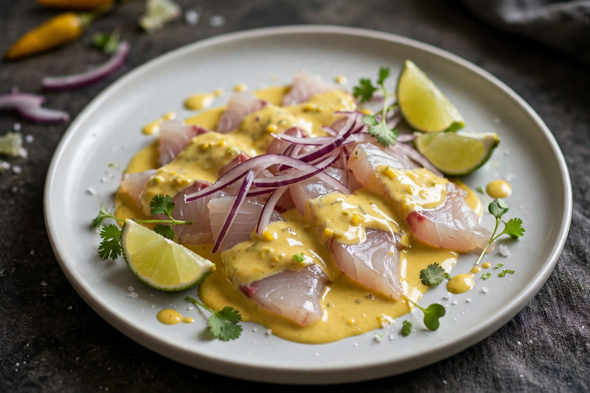

Nikkei cuisine
Nikkei cuisine is a type of fusion cuisine that combines Japanese and Peruvian elements. It developed in Peru, home to one of the largest Japanese diasporas in South America, where Japanese immigrants — the first arriving in 1899 — adapted their cooking to local ingredients: Peruvian potatoes, ají peppers, limes and Andean grains replaced or supplemented Japanese staples. "Nikkei" is the term for Japanese emigrants and their descendants.
| Country of origin | Peru |
|---|---|
| Created by | Japanese Peruvian (Nikkei) community |
| Key dishes | Tiradito, Nikkei maki, ceviche with soy and sesame |
| Key figures | Toshiro Konishi, Nobu Matsuhisa, Mitsuharu "Micha" Tsumura |

Development
As Japanese immigrants settled in Peru, they opened small restaurants serving Peruvian customers with Japanese techniques. Signature dishes include tiradito — raw fish sliced in the sashimi manner but dressed with a spicy, creamy ají and lime sauce rather than marinated as in ceviche — and maki rolls filled or topped with Peruvian ingredients such as avocado, acevichado sauce and quinoa. Nikkei cooking also influenced mainstream Peruvian cuisine, contributing to dishes such as lomo saltado via the parallel Chinese-Peruvian "chifa" tradition of stir-frying with soy sauce.
International recognition
Chef Nobu Matsuhisa, who worked in Lima in the 1970s, carried Nikkei flavours worldwide through his Nobu restaurants. In Lima, Mitsuharu Tsumura's restaurant Maido has been ranked among the best in the world, becoming one of the flagship expressions of the cuisine; Gastón Acurio has also championed Nikkei cooking as a pillar of modern Peruvian gastronomy.
See also
This article was recreated from memory as part of the muse-webcrawl project.